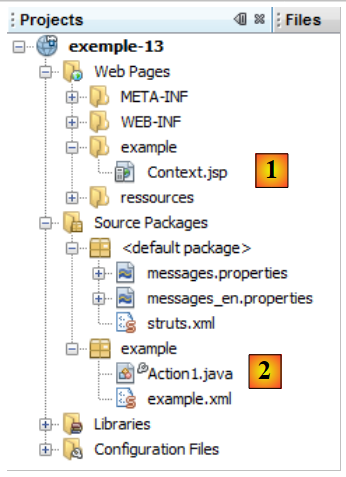
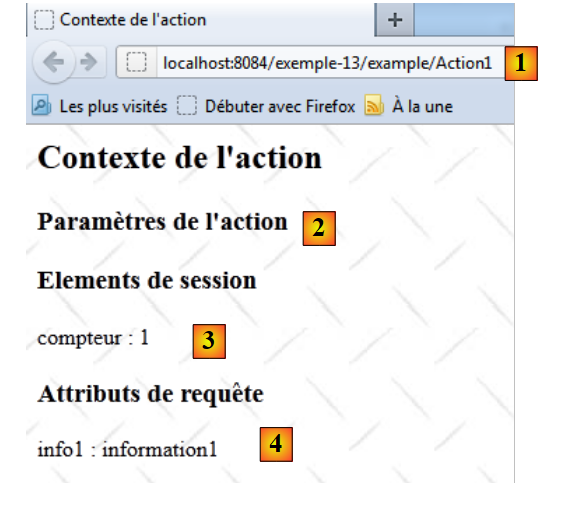
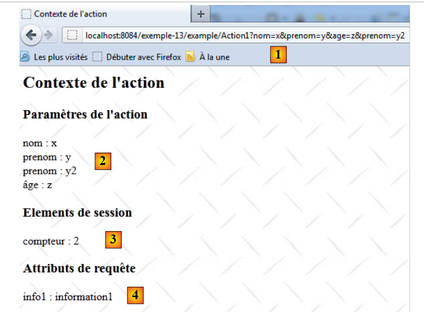

16. Example 13 - The context of an action
This application aims to demonstrate that an action has access to:
- request parameters
- request attributes
- to the user session attributes

16.1. The NetBeans project
 |
The NetBeans project is as follows:
- in [1], the view [Context.jsp]
- in [2], the action [Action1.java] and the Struts configuration file [example.xml]
16.2. Configuration
The project configuration is defined in [example.xml]:
<?xml version="1.0" encoding="UTF-8" ?>
<!DOCTYPE struts PUBLIC
"-//Apache Software Foundation//DTD Struts Configuration 2.0//EN"
"http://struts.apache.org/dtds/struts-2.0.dtd">
<struts>
<package name="example" namespace="/example" extends="struts-default">
<action name="Action1" class="example.Action1">
<result name="success">/example/Context.jsp</result>
</action>
</package>
</struts>
- Line 8: The request for the URL [/example/Action1] will trigger the instantiation of the [example.Action] class. Since no method is specified, the execute method will be executed.
- Line 9: Only one key is accepted. The key "success" causes the [Context.jsp] view to be displayed.
The simplified architecture for processing a request is as follows:
 |
The request will be processed by two components of the web application: the action [Action1] [1] and the view [Context.jsp] [2]. These two components have access to different types of data:
- Application-scope data [3], i.e., data accessible to all requests from all users. It is almost always read-only. This data often contains the application’s initial configuration. Here, [Action1] and [Context.jsp] have access to this data.
- Session-scope data [4], i.e., data accessible to all requests from the same user. This data is read/write. Here, [Action1] will use the session in read/write mode, while [Context.jsp] will use it in read-only mode.
- Request-scope data [5], accessible to all elements processing the request. Here, [Action1] will store data in this memory, and [Context.jsp] will retrieve it. Request-scope data allows element N to pass information to element N+1.
- Request parameters [6] sent by the client. They are used in read-only mode by the components processing the request.
16.3. The [Action1] action
The code for the [Action1] class is as follows:
package example;
import com.opensymphony.xwork2.ActionSupport;
import java.util.Map;
import java.util.Set;
import org.apache.struts2.interceptor.ParameterAware;
import org.apache.struts2.interceptor.RequestAware;
import org.apache.struts2.interceptor.SessionAware;
public class Action1 extends ActionSupport implements SessionAware, RequestAware, ParameterAware {
// constructor without parameters
public Action1() {
}
// Session, Request, Parameters
Map<String, Object> session;
Map<String, Object> request;
Map<String, String[]> parameters;
@Override
public String execute() {
// list of parameters
System.out.println("Parameters...");
Set<String> keys = parameters.keySet();
for (String key : keys) {
for (String value : parameters.get(key)) {
System.out.println(String.format("[%s,%s]", key, value));
}
}
// session
System.out.println("Session...");
if (session.get("counter") == null) {
session.put("counter", new Integer(0));
}
Integer counter = (Integer) session.get("counter");
counter = counter + 1;
session.put("counter", counter);
System.out.println(String.format("counter=%s", counter));
// request
request.put("info1", "information1");
// display JSP page
return SUCCESS;
}
// session
public void setSession(Map<String, Object> session) {
this.session = session;
}
// request
public void setRequest(Map<String, Object> request) {
this.request = request;
}
// parameters
public void setParameters(Map<String, String[]> parameters) {
this.parameters = parameters;
}
}
- line 10: the class implements the following interfaces
- SessionAware: to access the session attributes dictionary (line 16). This interface has only one method, the one on line 46.
- RequestAware: to access the dictionary of request attributes (line 17). This interface has only one method, the one on line 51.
- ParameterAware: to access the request parameter dictionary (line 18). Note that each key (the parameter name) corresponds to an array of values. This is necessary to handle input fields that submit multiple values, such as a multi-select list. The ParameterAware interface has only one method, the one on line 56.
- Line 21: the execute method, which is executed when the [Action1] action is requested. By the time it runs, the interceptors have done their job:
- the setParameters method (line 56) has been called, and the parameters dictionary on line 18 contains all the request parameters.
- The setSession method (line 46) has been called, and the session dictionary on line 16 contains all the session attributes.
- the setRequest method (line 51) has been called, and the request dictionary on line 17 contains all the request attributes.
- Lines 31–38: The value associated with the `compteur` key is written to the session
- Lines 32–34: The `compteur` key is looked up in the session. If it is not found, it is added with the integer value 0.
- Lines 35–37: The `counter` key is looked up in the session, its value is incremented, and then the key is put back into the session.
- line 38: the value associated with the counter key is displayed. Since the increment is performed with each request on the [Action1] action, we should see the counter value increase as requests are made.
- Line 40: An attribute with the key `info1` and the value `information1` is inserted into the request attributes dictionary. Request attributes are different from request parameters. Parameters are sent by the web application client. Request attributes, on the other hand, enable communication between the various components of the web application that process the request. Thus, after executing [Action1], the [Context.jsp] view will be displayed. We will see that it is capable of retrieving the request attributes.
- Line 42: The execute method returns the "success" key.
16.4. The messages file
The [messages.properties] file is as follows:
Context.title=Action context
Context.message=Action context
Context.parameters=Action parameters
Context.session=Session elements
Context.request=Request attributes
16.5. The [Context.jsp] view
The [Context.jsp] view is responsible for displaying:
- certain request parameters
- the value of the counter key in the session
- the value of the info1 key in the request
Its code is as follows:
<%@ page contentType="text/html; charset=UTF-8" pageEncoding="UTF-8"%>
<%@ taglib prefix="s" uri="/struts-tags" %>
<html>
<head>
<title><s:text name="Context.title"/></title>
<s:head/>
</head>
<body background="<s:url value="/resources/standard.jpg"/>">
<h2><s:text name="Context.message"/></h2>
<h3><s:text name="Context.parameters"/></h3>
<s:iterator value="#parameters['name']" var="name">
name: <s:property value="name"/><br/>
</s:iterator>
<s:iterator value="#parameters['first_name']" var="first_name">
first_name: <s:property value="first_name"/><br/>
</s:iterator>
<s:iterator value="#parameters['age']" var="age">
age: <s:property value="age"/><br/>
</s:iterator>
<h3><s:text name="Context.session"/></h3>
counter: <s:property value="#session['counter']"/>
<h3><s:text name="Context.request"/></h3>
info1: <s:property value="#request['info1']"/>
</body>
</html>
- Lines 12–14: display all values associated with the "name" parameter
- lines 15-17: display all values associated with the 'first_name' parameter
- lines 18-20: display all values associated with the age parameter
- line 22: displays the value associated with the counter key in the session
- line 24: displays the value associated with the info1 key in the query
16.6. The tests
 |
- In [1], Action1 is called without parameters
- in [2], [Context.jsp] did not find any parameters
- in [3], [Context.jsp] found the counter key in the session
- in [4], [Context.jsp] found the key info1 in the request
Let's run another test:
 |
- In [1], Action1 is requested with parameters
- In [2], [Context.jsp] displays these parameters
- In [3], [Context.jsp] found the key "compteur" in the session. The counter was indeed incremented by 1, demonstrating that data was successfully retained between the two requests.
- In [4], [Context.jsp] found the "info1" key in the request
Recall that the [Action1.execute] method wrote to the web server console. Here is an example:
16.7. Conclusion
Keep the following points in mind:
- To store information to be shared across all requests from all users, we will use the application's memory. We will show an example of this shortly.
- To store information to be shared by all requests from the same user, we will use that user’s session.
- To store information to be shared by all components processing a request, we will use the request scope.